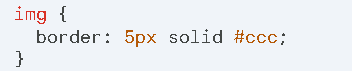
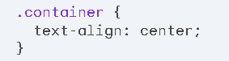
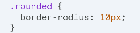
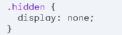

<html>
  <head>
    <title>CSS</title>
    <link rel="stylesheet" href="../styles.css" />
  </head>
</html>
<body>
  <ul class="navigation">
    <li><a href="../index.html">Acasa</a></li>
    <li><a href="../despre.html">Despre</a></li>
    <li><a href="tabele.html">Tabele</a></li>
    <li><a href="multimedia.html">Multimedia</a></li>
    <li><a href="escape.html">Escape</a></li>
    <li><a href="git.html">Terminal</a></li>
    <li><a href="github.html">GitHub</a></li>
  </ul>
  <h2>CSS: O privire de ansamblu</h2>
  <h3>Ce este CSS?</h3>
  <p>
    Cascading Style Sheets (CSS) este un limbaj de markup utilizat pentru a
    descrie prezentarea elementelor din documentele web. CSS permite separarea
    conținutului unui document web de prezentarea sa, făcând codul mai ușor de
    întreținut și mai flexibil
  </p>
  <h3>Cum funcționează CSS?</h3>
  <p>
    CSS funcționează prin aplicarea stilurilor la elementele HTML din pagina
    dvs. web. Puteți defini stiluri pentru elemente individuale, grupuri de
    elemente sau chiar pentru întregul document. Stilurile CSS sunt definite în
    foi de stil, care pot fi fie încorporate în codul HTML al paginii dvs., fie
    legate ca fișiere externe.
  </p>
  <h3>Proprietăți CSS:</h3>
  <p>
    CSS definește o varietate de proprietăți care pot fi utilizate pentru a
    controla aspectul elementelor HTML. Unele proprietăți CSS comune includ:
  </p>
  <ul>
    <li>
      <b>Proprietăți de text:</b> Controlează aspectul textului, cum ar fi
      familia de fonturi, dimensiunea fontului, greutatea fontului, culoarea
      textului, decorarea textului și alinierea textului.
    </li>
    <li>
      <b>Proprietăți de fundal:</b> Controlează aspectul fundalului elementelor,
      cum ar fi culoarea fundalului, imaginea de fundal, repetarea imaginii și
      poziția imaginii.
    </li>
    <li>
      <b>Proprietăți de margine și spațiere:</b> Controlează spațiul din jurul
      elementelor, inclusiv marginile, padding-ul și spațierea dintre elemente.
    </li>
    <li>
      <b>Proprietăți de poziționare:</b> Controlează poziția elementelor pe
      pagină, permițând poziționarea statică, relativă, absolută și fixă.
    </li>
    <li>
      <b>Proprietăți de dimensiune:</b> Controlează lățimea și înălțimea
      elementelor.
    </li>
    <li>
      <b>Proprietăți de vizibilitate:</b> Controlează vizibilitatea elementelor,
      permițând ascunderea sau afișarea lor.
    </li>
    <li>
      <b>Proprietăți de decorare:</b> Controlează aspectul decorării
      elementelor, cum ar fi marginile, liniile și hyperlink-urile.
    </li>
    <li>
      <b>Proprietăți diverse:</b> Există o varietate de alte proprietăți CSS
      care controlează aspecte specifice ale elementelor, cum ar fi umbrele,
      opacitatea și tranzițiile.
    </li>
  </ul>
  <h3>Exemple de cod CSS:</h3>
  <div class="flex-container">
    <p>Schimbarea culorii de fundal a unui element:</p>
    
  </div>
  <div class="flex-container">
    <p>Adăugarea unei margini la o imagine:</p>
    
  </div>
  <div class="flex-container">
    <p>Centrarea textului într-un container:</p>
    
  </div>
  <div class="flex-container">
    <p>Crearea unui element cu colțuri rotunjite:</p>
    
  </div>
  <div class="flex-container">
    <p>Ascunderea unui element:</p>
    
  </div>
</body>
